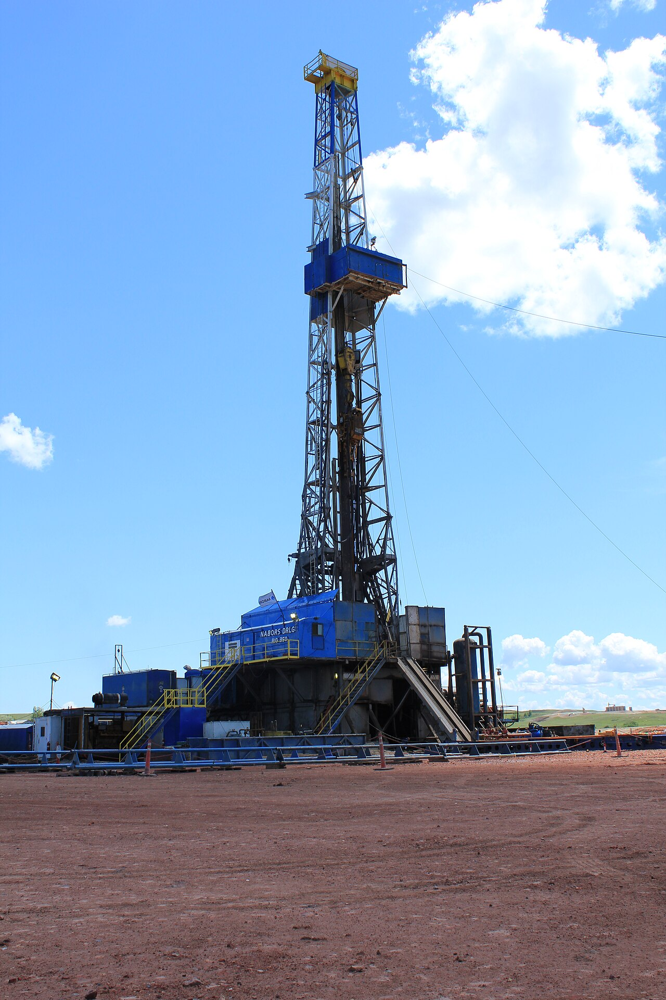
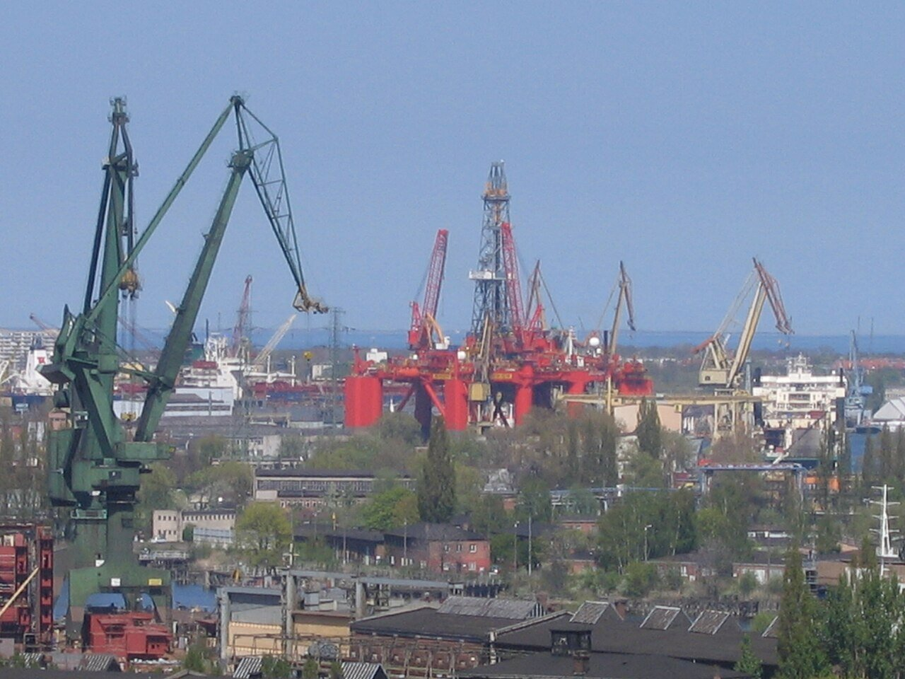
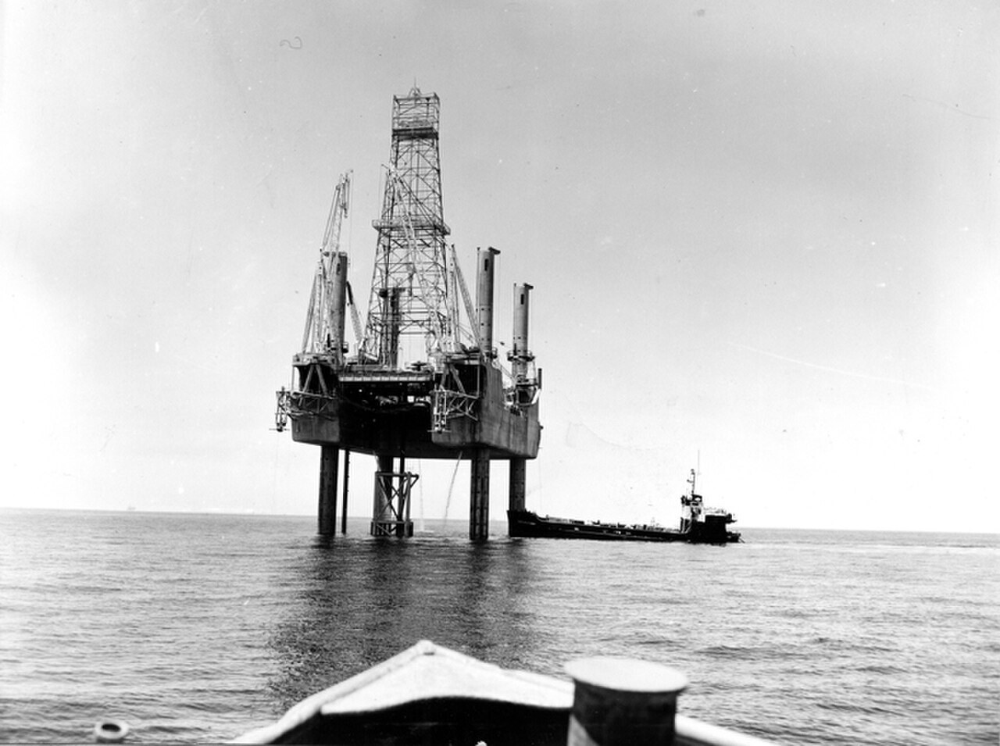
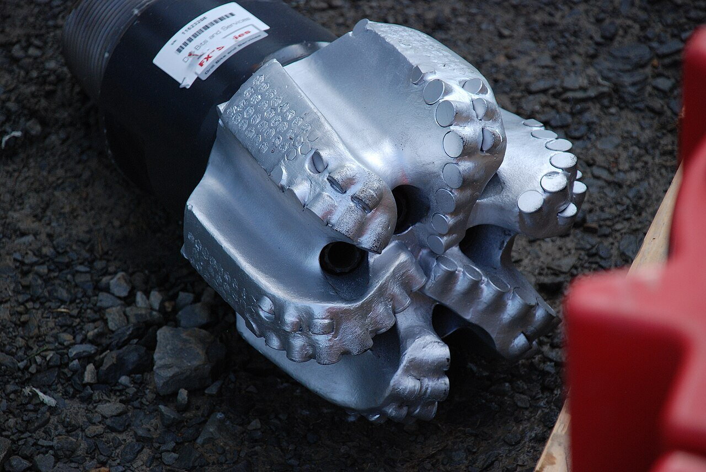

Chapter 17 — Drilling Techniques
Vertical is only one geometry. Directional and horizontal wells hit offshore targets from one platform, thread thin pays, and create the laterals that frac. Separating MD from TVD—and planned deviation from a crooked accident—is non-negotiable for data work.
Learning goals
- Define straight-hole contract limits vs crooked hole vs planned directional.
- Explain KOP, build, sliding vs rotating, RSS, and MWD surveys.
- List business reasons to deviate (including relief wells and sidetracks).
- Use MD vs TVD correctly for pipe, pressure, and reservoir depth.

{kind=link}

{kind=link}

{kind=link}
Vertical wells
A straight hole is contractual: max deviation (°/100 ft) and a cone the wellbore must stay inside. Leaving the cone breaks contract even if you hit the map target. A crooked hole wanders on its own—no plan—often when the bit hits hard dipping beds (>45° dip → bit slides downdip; <45° → walks updip). “Crooked hole country” is packed with such layers. Slick BHA (no stabilizers) can help stay vertical; contracts protect adjacent leases and spacing (DSU) logic.
Directional drilling
Deviated wells are drawn on purpose to a subsurface target cube/cylinder. KOP (kickoff point) is the MD where you leave near-vertical and start building angle. Through casing, mill a window to sidetrack. Deviation is angle from vertical at a point (0° hanging, 90° flat)—not the same as dogleg severity. Build section is where angle increases; steel pipe often tops out near ~20°/100 ft before fatigue/torque problems (fiberglass can bend tighter but is limited).
Plan = build. Unwanted sharp change (>~3°/100 ft) = dogleg that later sticks pipe (Ch 16).
How we steer (coarse → fine)
- Whipstock: oriented steel wedge; bit climbs the ramp for a pilot, then open. Slow, coarse—historically abused for illegal slant holes.
- Jet bit: soft rock only—big nozzle erodes one side without rotating; then survey and open.
- Steerable motor + bent sub (0.5–3°): mud motor turns the bit while pipe above can stay still.
- Rotating mode: whole string turns; bend averages out → hold angle, good ROP.
- Sliding mode: string does not rotate; bit points with the bend → build or drop. Lower ROP, more friction—slow time log is often intentional.
- Rotary steerable (push-the-bit): pads push the bit off-center while the string always rotates—smoother hole, higher ROP, continuous steering.
How the driller knows where the bit is
MWD sensors just above the bit (gyros, magnetometers, accelerometers) send inclination and azimuth to surface—live trajectory. Compass surveys need nonmagnetic (K-Monel) collars; near casing/steel use gyros. Without good surveys, anti-collision, target hit, TVD, and “are we in pay?” are fiction.

{kind=link}
Why deviate (business)
- One platform, many targets (dozens of wells from one jacket).
- Drill from beach to shallow-water field—skip offshore rig.
- Relief well: approach a blowing well, intercept, kill through the formation (magnetometers help find steel casing).
- Sidetrack around an unrecoverable fish—new wellbore, same well.
- Reach several reservoirs with one hole; pad drilling (tight wellheads); extended-reach (MD inflates, TVD does not—records >11 km departure in notes).
Horizontal wells
Not “very directional”—a well that lies down in the pay and runs along the layer. Typical profile: two builds + a tangent for BHA room. Entry point hits the target; heel starts the lateral; toe is the far end. Short/medium/long radius = how tight the turn from vertical to 90° is.

{kind=link}
Why more production: a vertical may cross 10 m of pay; a lateral may stay in 1,000 m of the same layer. In fractured chalk, a vertical hits one fracture; a horizontal strings many. Matrix perm <1 md needs those fractures (and laterals are the base for shale frac). Horizontals also reduce gas/water coning by staying mid-oil column. Drilling cost may be comparable; logging and completing through the curve is harder. Motherbore + multiple laterals = one well, several horizontal wellbores.
Well depth: MD vs TVD
- MD / TD / driller’s / logged depth: tape along the pipe—every 30 ft joint adds here. Time log, ROP, “we’re at 4,200 m” on the floor = MD.
- TVD: plumb-line depth—always ≤ MD on a curve. No TVD sensor: integrate surveys (inc + azi).
Use TVD for hydrostatic pressure, oil window, and “reservoir at 2,800 m vertical.” Use MD for pipe tally, KOP on logs, ROP. Mixing them on a horizontal makes the toe look thousands of meters “into” a reservoir that is only ~2,800 m TVD—a classic error.
Air and foam drilling
Air: rotary without mud—compressor, cuttings out the blooie line, rotating head on the kelly. Higher ROP, less filtrate/skin—but no cake (hole stability), weak kick control, and air + gas = fire risk. Foam (air + soap) lifts water and cuttings when the hole weeps.
Ops read: sliding = intentionally low ROP / uneven WOB; rotating/RSS = better ROP. Trajectory comes from MWD, not hook MD. A sidetrack is not the same wellbore as the fish-plugged hole.
Key terms
- KOP
- Kickoff point—MD where deviation begins.
- Build / dogleg
- Planned angle gain vs unwanted sharp bend.
- MWD
- Measurements while drilling—direction and drilling mechanics.
- RSS
- Rotary steerable system—steer while always rotating.
- MD / TVD
- Along-hole depth vs vertical depth.
- Heel / toe
- Start and end of a horizontal lateral.
- Sidetrack
- New borehole leaving the original wellbore.